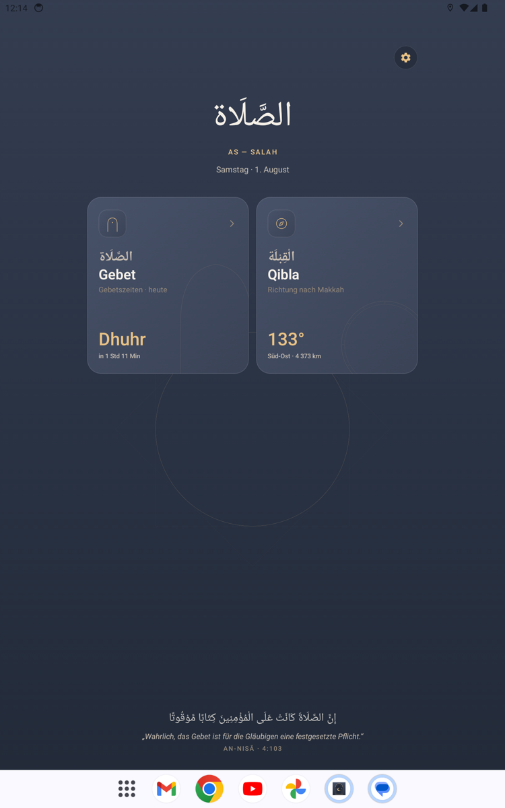
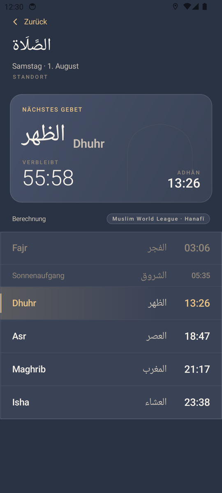
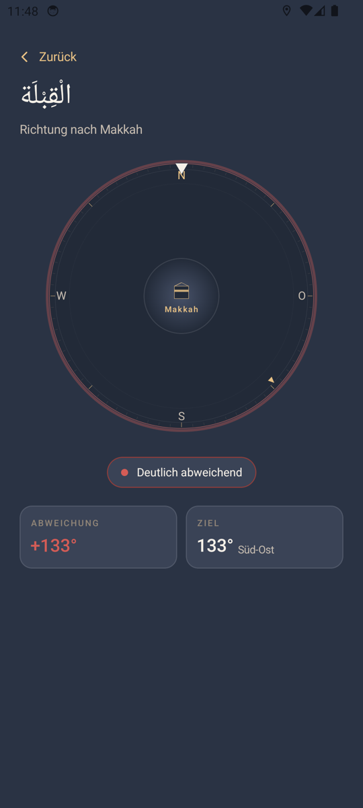

الصَّلَاة
AS — SALAH
Gebetszeiten und Qibla-Kompass — ruhig, offline-fähig, ohne Werbung und ohne Tracking.
APK herunterladenAndroid · direkte Installation, kein Konto nötig
Was die App kann
Zwei Dinge, dafür richtig.
Gebetszeiten
Sechs Zeiten für deinen Standort, mit Countdown zum nächsten Gebet.
Qibla-Kompass
Zeigt die Richtung nach Makkah und meldet zurück, wenn du richtig stehst.
Offline nutzbar
Ohne Internet rechnet die App die Zeiten selbst — unterwegs und im Funkloch.
Keine Datensammlung
Kein Tracking, keine Analytics, keine Werbung. Der Standort bleibt auf dem Gerät.
Bilder aus der App
Aus der laufenden App.



Was ist neu
In Version —
—
Installation — Schritt für Schritt
Die App kommt nicht aus einem Store, deshalb fragt Android einmal nach. Das ist normal.
- APK herunterladenAuf den großen Knopf oben tippen. Die Datei landet in deinen Downloads.
- Datei öffnenDie heruntergeladene Datei antippen — oben in der Benachrichtigung oder in der App „Dateien“ unter „Downloads“.
- Warnung bestätigenAndroid meldet „unbekannte App“ oder „aus dieser Quelle installieren“. Auf „Einstellungen“ tippen, den Schalter für deinen Browser einschalten, zurückgehen.
- InstallierenAuf „Trotzdem installieren“ bzw. „Installieren“ tippen. Fertig — As-Salah liegt jetzt in deiner App-Liste.
Die Warnung erscheint bei jeder App außerhalb eines Stores. Lade die Datei nur von dieser Seite herunter.